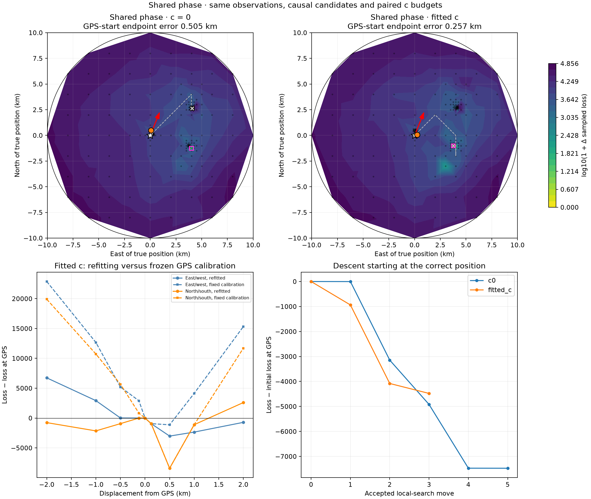
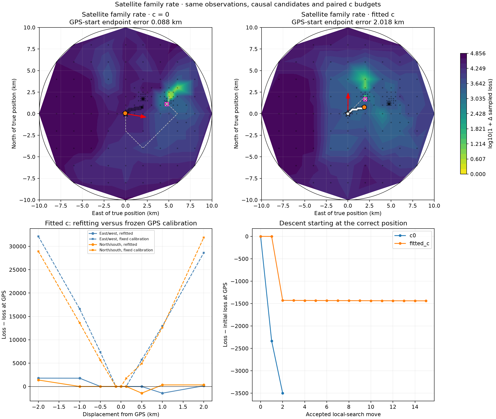
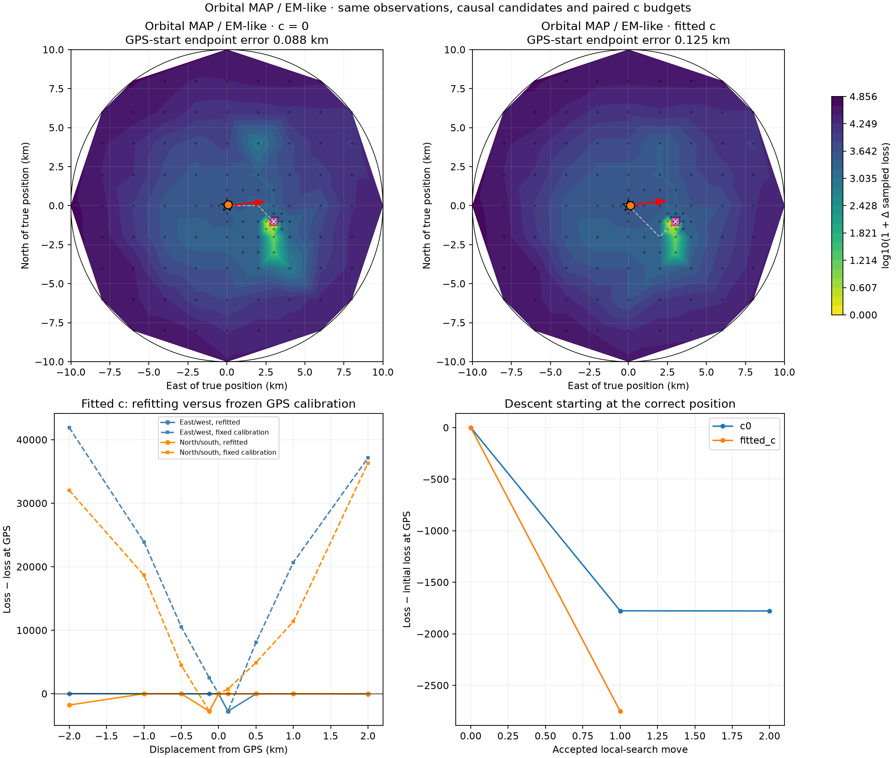
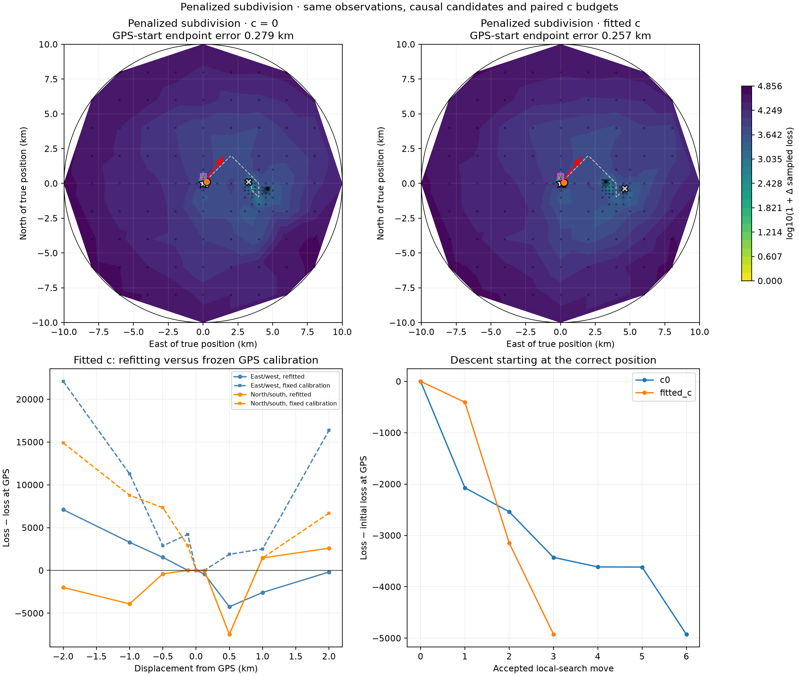
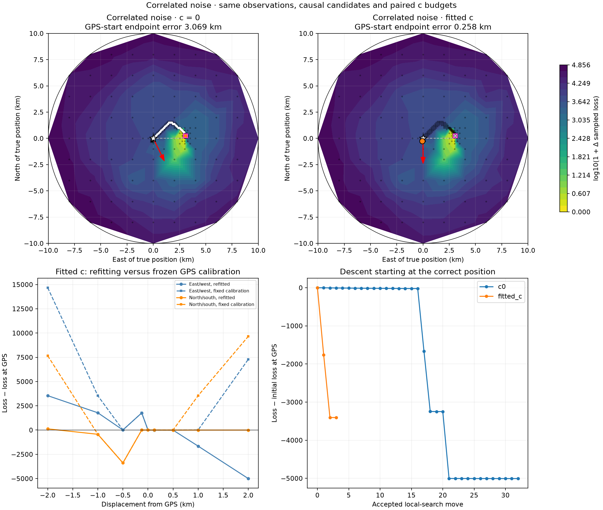
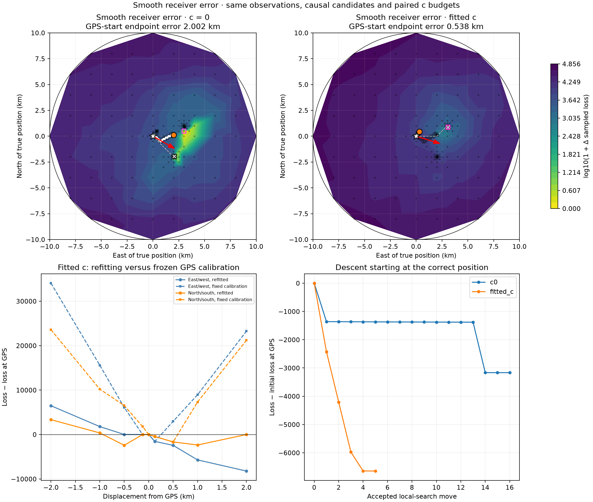

GPS defines the diagnostic region and starting point; this is not blind evaluation. Loss includes hard gates, clutter and complexity terms. It is not a calibrated probability. Every position uses a consistent improved GPS-calibration restart with three nuisance-update rounds; this is the effective algorithm surface, not a proven exact profile likelihood. Dots are evaluated locations; contours are linear visual interpolation. Local endpoints are stencil minima to the recorded scale, not mathematical/global optimum guarantees.
| method | arm | endpoint_east_km | endpoint_north_km | endpoint_error_km | truth_loss | endpoint_loss | stationary_stencil_km |
|---|---|---|---|---|---|---|---|
| shared_phase | c0 | 0.0625 | 0.5 | 0.5047541598098477 | 42439.67086353304 | 34966.348750157056 | 0.0625 |
| shared_phase | fitted_c | 0.25 | 0.0625 | 0.25744771089216656 | 43382.02826845195 | 38903.036271856115 | 0.0625 |
| family_rate | c0 | -0.0625 | 0.0625 | 0.08841634798815842 | 44204.642650759786 | 40704.679971014106 | 0.0625 |
| family_rate | fitted_c | 1.875 | 0.75 | 2.017894104590549 | 40358.29514140687 | 38919.211513016366 | 0.0625 |
| orbit_em | c0 | 0.0625 | 0.0625 | 0.08841634798815842 | 24059.02082634944 | 22281.075926458736 | 0.0625 |
| orbit_em | fitted_c | 0.125 | 0.0 | 0.12485972897177912 | 23581.846317508633 | 20830.985920610554 | 0.0625 |
| penalized_split | c0 | 0.25 | 0.125 | 0.279354299701235 | 39136.24919944555 | 34210.2209273324 | 0.0625 |
| penalized_split | fitted_c | 0.25 | 0.0625 | 0.25744771089216656 | 39545.61412853962 | 34621.7056561239 | 0.0625 |
| correlated_noise | c0 | 3.0625 | 0.25 | 3.069251140764723 | 12507.624258193393 | 7500.911110863054 | 0.0625 |
| correlated_noise | fitted_c | -0.0625 | -0.25 | 0.25810363232919853 | 12514.704739690242 | 9108.520740657164 | 0.0625 |
| receiver_smooth | c0 | 2.0 | 0.125 | 2.001660982018775 | 53764.09513512804 | 50598.83526978199 | 0.0625 |
| receiver_smooth | fitted_c | 0.3125 | 0.4375 | 0.5380628376395727 | 29444.77058802019 | 22798.707005541517 | 0.0625 |





